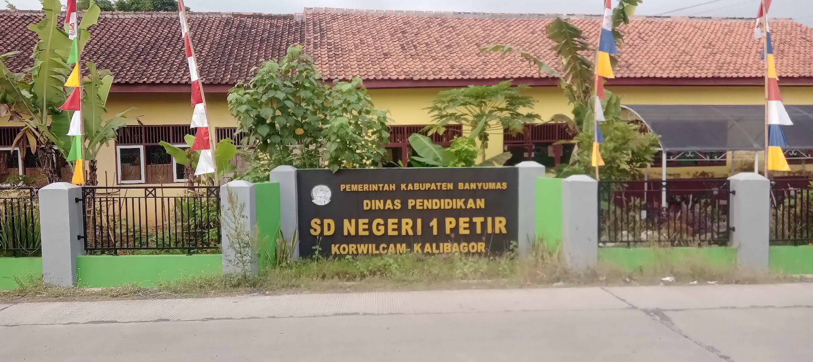
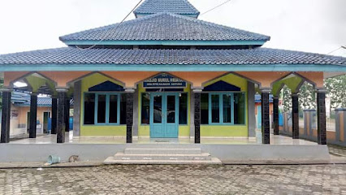
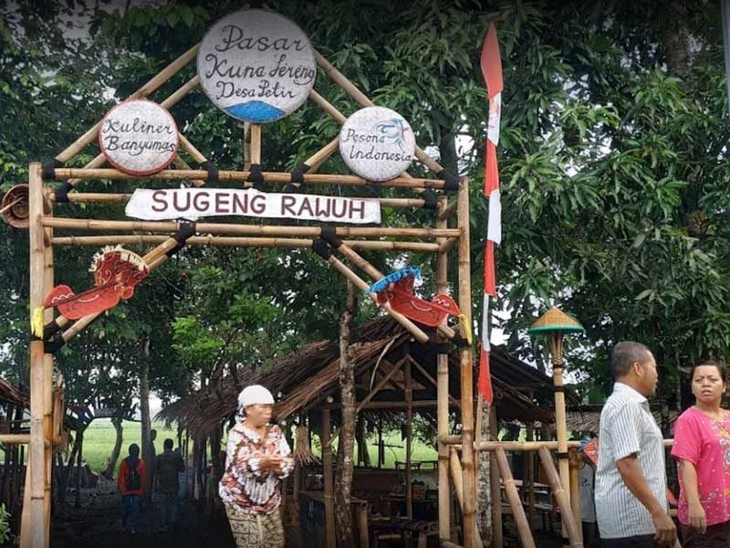
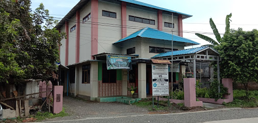

Tentang Desa
Profil Desa Petir
Desa Petir merupakan salah satu pusat kegiatan masyarakat di Kecamatan Kalibagor yang menggabungkan harmoni sektor pertanian dengan pemukiman modern. Desa ini berkomitmen pada keterbukaan informasi dan kemajuan infrastruktur.
Peta Administrasi Desa
Data Administratif
- Kode Desa33.02.10.2009
- Kepala DesaBedjo Siswanto, S.Sos
- Jumlah RT/RW17/04
- Tahun Data2024
Batas Wilayah
Utara
Desa Kalicupak Kidul
Selatan
Desa Pajerukan
Timur
Desa Kedungbenda
Barat
Desa Sokaraja Wetan
Fasilitas Umum

• SDN 1 Petir
• SDN 2 Petir
• SMPN 3 Kalibagor

• Masjid Jami' Petir
• Masjid Nurul Hidayah
• Masjid Baitul Karomah

• Pasar Kunalereng

• Kantor Balai Desa Petir